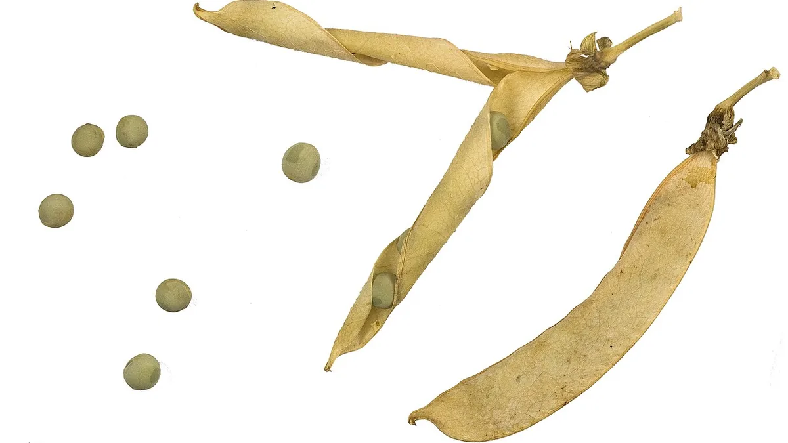

मटर की खेती
Matar (Pea) Cultivation — Complete Guide
मटर में पैदावार से ज़्यादा समय कमाता है — दिसंबर की शुरुआत का भाव जनवरी से डेढ़-दो गुना होता है। किस्म, बुवाई और चूर्णिल आसिता का पूरा गणित।
✍️ Kunal Rajput — KrashiMitra⏱️ 8 मिनट पढ़ें📅 अगस्त 2026

मटर का पौधा फली बनने की अवस्था में।
मटर — जहाँ तुड़ाई की तारीख़ ही कमाई तय करती है
⏱️
60–70 दिन
जल्दी किस्म की पहली तुड़ाई
🌱
100–120 किलो
बीज दर प्रति हेक्टेयर
🦠
चूर्णिल आसिता
देर से बोई फसल का सबसे बड़ा रोग
📖
भूमिका
मटर ऐसी फसल है जिसमें पैदावार से ज़्यादा समय कमाई तय करता है। नवंबर के आख़िर और दिसंबर की शुरुआत में जब बाज़ार में हरी मटर कम होती है, तब भाव सबसे ऊंचा रहता है। जनवरी आते-आते हर तरफ़ से मटर आने लगती है और वही माल आधे भाव पर बिकता है। यानी 15 दिन पहले तैयार हो जाने वाली फसल, 15 दिन बाद वाली फसल से डेढ़-दो गुना कमा सकती है।
इसीलिए मटर में सबसे बड़ा फ़ैसला किस्म का है — जल्दी पकने वाली या मुख्य मौसम वाली। इसके बाद दूसरा बड़ा दुश्मन है चूर्णिल आसिता (पाउडरी मिल्ड्यू), जो हर साल बहुत सी फसलें आख़िरी तुड़ाई से पहले ही ख़त्म कर देता है। यह लेख दोनों बातें व्यावहारिक तरीके से समझाता है।
विज्ञापन
🔍
जल्दी किस्म या मुख्य मौसम — कौन सी बोएं?
बात
जल्दी पकने वाली किस्म
मुख्य मौसम की किस्म
बुवाई
अक्टूबर का दूसरा पखवाड़ा
नवंबर
पहली तुड़ाई
60–70 दिन में
90–100 दिन में
बाज़ार भाव
ऊंचा — कम आवक के समय
सामान्य या कम
कुल पैदावार
कम
ज़्यादा
बीज दर
100–120 किलो/हेक्टेयर
80–100 किलो/हेक्टेयर
किसके लिए
मंडी के पास, हरी मटर बेचने वाले
दाने के लिए, थोक बिक्री
सीधा नियम: अगर आप हरी मटर मंडी में बेचते हैं तो जल्दी किस्म ही फ़ायदे की है, भले कुल पैदावार कम रहे — क्योंकि दिसंबर की शुरुआत का भाव जनवरी के भाव से कहीं ऊंचा होता है। और अगर सूखा दाना बेचना है, तो मुख्य मौसम की किस्म बोएं।
💰
सबसे अच्छा रास्ता बीच का है — आधे खेत में जल्दी किस्म और आधे में मुख्य मौसम की। इससे ऊंचा भाव भी पकड़ में आता है और कुल पैदावार भी नहीं गिरती। बुवाई का समय आगे-पीछे रखने से तुड़ाई की मज़दूरी भी एक साथ नहीं पड़ती।
🚜
बुवाई — समय, दूरी और बीज दर
जल्दी किस्म का समय: 15 से 31 अक्टूबर। इससे पहले बोने पर गर्मी से अंकुरण ख़राब होता है।
मुख्य मौसम का समय: नवंबर का पूरा महीना।
कतार से कतार: जल्दी किस्म में 30 सेंटीमीटर; मुख्य मौसम की लंबी किस्मों में 45 सेंटीमीटर।
पौधे से पौधा: 5–10 सेंटीमीटर।
गहराई: 3–5 सेंटीमीटर।
बीज उपचार: पहले फफूंदनाशक (ट्राइकोडर्मा विरिडी 5–10 ग्राम/किलो बीज), छाया में सुखाएँ, फिर मटर का राइजोबियम कल्चर।
⚠️
जल्दी किस्म को बहुत जल्दी बोने का लालच न करें। अक्टूबर के पहले पखवाड़े में तापमान अभी ऊंचा रहता है — बीज सड़ जाता है और खेत में पौधों की संख्या आधी रह जाती है। सही खिड़की 15 अक्टूबर के बाद खुलती है।
🧪
खाद — दलहन है, यूरिया कम चाहिए
तत्व
मात्रा (प्रति हेक्टेयर)
कब और कैसे
गोबर की सड़ी खाद
15–20 टन
खेत तैयारी के समय
नाइट्रोजन (N)
20–25 किलो
स्टार्टर डोज़, बुवाई पर
फॉस्फोरस (P₂O₅)
60 किलो
पूरी मात्रा बुवाई पर
पोटाश (K₂O)
40 किलो
पूरी मात्रा बुवाई पर
सल्फर (S)
20 किलो
कमी वाले खेत में
मटर में फॉस्फोरस सबसे ज़रूरी तत्व है — यही जड़ और फली दोनों बनाता है। इसकी पूरी मात्रा बुवाई के समय ही देनी है, बाद में देने का फ़ायदा नहीं होता।
⚠️
ये सामान्य सिफ़ारिशें हैं। असली मात्रा मिट्टी जांच रिपोर्ट से तय करें और KVK या ज़िला उद्यान/कृषि कार्यालय से पुष्टि कर लें — राज्यवार सिफ़ारिशें अलग होती हैं।
विज्ञापन
🦠
चूर्णिल आसिता — मटर का सबसे बड़ा रोग
यह मटर का नंबर एक दुश्मन है। पत्तियों, तनों और फलियों पर सफ़ेद-सलेटी पाउडर जैसी परत जम जाती है, जैसे किसी ने राख छिड़क दी हो। पौधा प्रकाश-संश्लेषण नहीं कर पाता, फलियाँ छोटी और बदरंग रह जाती हैं, और बाज़ार में माल की कीमत गिर जाती है।
पहचान बिंदु
✅ स्वस्थ पौधा
❌ ग्रस्त पौधा
पत्ती की सतह
साफ़ हरी
सफ़ेद पाउडर जैसी परत
तना
हरा, चिकना
सलेटी परत, बाद में भूरा
फली
चमकदार हरी, भरी हुई
बदरंग, छोटी, आधी भरी
कब सबसे ज़्यादा
—
देर से बोई फसल में, गर्म-सूखे दिन व ठंडी रातें
बिना पैसे खर्च किए बचाव:
समय पर बुवाई: देर से बोई गई मटर में यह रोग कहीं ज़्यादा लगता है। समय पर बुवाई ही सबसे सस्ता बचाव है।
रोग-सहनशील किस्म: अपने ज़िले के KVK से इस साल की सिफ़ारिश की गई सहनशील किस्म पूछें।
हवा का आना-जाना: बहुत घनी बुवाई से बचें — भीड़ में नमी रुकती है और रोग तेज़ी से फैलता है।
रोगी अवशेष हटाएँ: फसल के बाद बचा-खुचा खेत में न छोड़ें।
दवा (तकनीकी नाम)
मात्रा / 10 लीटर पानी
कब
घुलनशील सल्फर 80 WP
20–30 ग्राम
पहला लक्षण दिखते ही
हेक्साकोनाज़ोल 5 EC
10 मि.ली.
रोग फैलने लगे तो
ट्राइडेमॉर्फ 80 EC
5 मि.ली.
तेज़ संक्रमण में
⚠️
हरी मटर तुड़ाई वाली फसल है — इसलिए छिड़काव और तुड़ाई के बीच का "प्रतीक्षा काल" (waiting period) लेबल पर देखकर ज़रूर मानें। छिड़काव के तुरंत बाद तोड़ी गई मटर में दवा के अवशेष रह जाते हैं। मात्रा CIB&RC अनुमोदित लेबल से लें और KVK या कृषि विभाग से पुष्टि करें।
🐛
कीट — फली छेदक, माहू और पत्ती सुरंगक
फली छेदक: फली में छेद करके दाना खा जाता है। बर्ड पर्च (20–25 प्रति हेक्टेयर) और फेरोमोन ट्रैप पहले लगाएँ। ज़रूरत पड़े तो इमामेक्टिन बेंज़ोएट 5 SG 4 ग्राम प्रति 10 लीटर।
माहू (चेपा): कोमल टहनियों का रस चूसता है और विषाणु रोग फैलाता है। पीले चिपचिपे कार्ड 8–10 प्रति एकड़; ज़रूरत हो तो इमिडाक्लोप्रिड 17.8 SL 3 मि.ली. प्रति 10 लीटर।
पत्ती सुरंगक (लीफ माइनर): पत्ती के अंदर टेढ़ी-मेढ़ी सफ़ेद लकीरें बनाता है। ग्रस्त पत्तियाँ तोड़कर नष्ट करें; नीम तेल 5 मि.ली. प्रति लीटर।
मित्र कीट बचाएँ: लेडीबर्ड बीटल माहू खाती है — फूल आने पर बेवजह छिड़काव करके इसे न मारें।
💧
सिंचाई और तुड़ाई
सिंचाई: मटर को दो नाज़ुक अवस्थाओं पर पानी चाहिए —
फूल आते समय (लगभग 45 दिन) — इस समय पानी की कमी से फूल झड़ जाते हैं।
फली भरते समय (लगभग 65–70 दिन) — इस समय की कमी सीधे दाने का आकार घटाती है।
हल्की सिंचाई करें; खेत में पानी भरने से जड़ सड़न और उकठा बढ़ता है।
तुड़ाई: हरी मटर की तुड़ाई तब करें जब फली भरी हुई पर चमकदार हरी हो और दाना नरम हो। फली का रंग हल्का पड़ने या जालीदार दिखने लगे तो दाना सख़्त हो चुका है और भाव गिर जाता है। तुड़ाई हर 5–7 दिन में दोहराएँ — आमतौर पर 3–4 तुड़ाई मिलती हैं।
🌅
तुड़ाई सुबह ठंडे समय में करें और माल को छाया में रखें। धूप में रखी हरी मटर जल्दी मुरझाकर पीली पड़ जाती है, और मंडी पहुंचते-पहुंचते भाव कम लग जाता है।
🚫
ये गलतियाँ कभी न करें
अक्टूबर के पहले पखवाड़े में बुवाई — तापमान ऊंचा रहने से बीज सड़ जाता है और पौध संख्या आधी रह जाती है।
बहुत घनी बुवाई — हवा न चलने से चूर्णिल आसिता तेज़ी से फैलती है।
छिड़काव के तुरंत बाद तुड़ाई — प्रतीक्षा काल न मानने से मटर में दवा के अवशेष रह जाते हैं।
फूल आते समय पानी न देना — इसी एक चूक से फूल झड़ जाते हैं और फलियाँ कम बनती हैं।
देर से तुड़ाई — दाना सख़्त होते ही हरी मटर का भाव गिर जाता है।
ज़्यादा यूरिया — पौधा बेल की तरह बढ़ता है, फलियाँ कम लगती हैं।
हर साल उसी खेत में मटर — उकठा और चूर्णिल आसिता दोनों बढ़ते जाते हैं।
🗓️
मटर का कैलेंडर — कब क्या करें
समय
ज़रूरी काम
सितंबर – अक्टूबर की शुरुआत
खेत तैयारी, गोबर खाद, बीज व मटर का राइजोबियम कल्चर लाएँ
15–31 अक्टूबर
जल्दी किस्म की बुवाई — बीज उपचार के साथ
नवंबर
मुख्य मौसम की किस्म की बुवाई
बुवाई + 25–30 दिन
निराई-गुड़ाई; पीले चिपचिपे कार्ड लगाएँ
बुवाई + 45 दिन
फूल की अवस्था — पहली सिंचाई ज़रूरी
दिसंबर
चूर्णिल आसिता की निगरानी शुरू; पहला लक्षण दिखते ही सल्फर छिड़काव
बुवाई + 60–70 दिन
जल्दी किस्म की पहली तुड़ाई — सबसे ऊंचे भाव का समय
जनवरी – फरवरी
मुख्य मौसम की तुड़ाई, हर 5–7 दिन में दोहराएँ
✅
निष्कर्ष
तीन बातें याद रखें: हरी मटर में पैदावार से ज़्यादा तुड़ाई का समय कमाता है — जल्दी किस्म 15 अक्टूबर के बाद बोएं; चूर्णिल आसिता का पहला लक्षण दिखते ही सल्फर का छिड़काव करें, इंतज़ार न करें; और तुड़ाई तब करें जब फली चमकदार हरी हो, दाना सख़्त होने से पहले।
मटर में मंडी का कैलेंडर उतना ही ज़रूरी है जितना खेत का कैलेंडर।
विज्ञापन
❓
अक्सर पूछे जाने वाले सवाल
1मटर की बुवाई का सही समय क्या है?
जल्दी पकने वाली किस्म की बुवाई 15 से 31 अक्टूबर और मुख्य मौसम की किस्म की बुवाई पूरे नवंबर में होती है। अक्टूबर के पहले पखवाड़े में बोने से बचें — तापमान ऊंचा रहने पर बीज सड़ जाता है और खेत में पौधों की संख्या आधी रह जाती है।
2एक हेक्टेयर में मटर का कितना बीज लगता है?
जल्दी पकने वाली किस्म में 100–120 किलो प्रति हेक्टेयर और मुख्य मौसम की किस्म में 80–100 किलो प्रति हेक्टेयर बीज लगता है। जल्दी किस्म में कतार की दूरी 30 सेंटीमीटर और लंबी किस्मों में 45 सेंटीमीटर रखें।
3मटर में सफ़ेद पाउडर जैसी बीमारी का इलाज क्या है?
यह चूर्णिल आसिता (पाउडरी मिल्ड्यू) है। पहला लक्षण दिखते ही घुलनशील सल्फर 80 WP 20–30 ग्राम प्रति 10 लीटर पानी का छिड़काव करें; रोग बढ़ने पर हेक्साकोनाज़ोल 5 EC 10 मि.ली. प्रति 10 लीटर। सबसे सस्ता बचाव समय पर बुवाई और कम घनी बुवाई है, क्योंकि देर से बोई फसल में यह रोग कहीं ज़्यादा लगता है।
4जल्दी वाली मटर की किस्म बोने से क्या फ़ायदा है?
जल्दी किस्म 60–70 दिन में पहली तुड़ाई दे देती है, यानी नवंबर के आख़िर और दिसंबर की शुरुआत में — जब बाज़ार में आवक कम होती है और भाव सबसे ऊंचा रहता है। कुल पैदावार मुख्य मौसम की किस्म से कम रहती है, पर ऊंचे भाव के कारण शुद्ध कमाई अक्सर ज़्यादा होती है।
5मटर में कितनी सिंचाई करनी चाहिए?
मटर को दो नाज़ुक अवस्थाओं पर पानी चाहिए — फूल आते समय (लगभग 45 दिन) और फली भरते समय (लगभग 65–70 दिन)। फूल आते समय पानी की कमी से फूल झड़ जाते हैं। सिंचाई हल्की रखें, क्योंकि खेत में पानी भरने से जड़ सड़न और उकठा बढ़ता है।
6हरी मटर की तुड़ाई कब करनी चाहिए?
तुड़ाई तब करें जब फली भरी हुई और चमकदार हरी हो तथा दाना नरम हो। फली का रंग हल्का पड़ने या जालीदार दिखने लगे तो दाना सख़्त हो चुका है और भाव गिर जाता है। तुड़ाई हर 5–7 दिन में दोहराएँ; आमतौर पर 3–4 तुड़ाई मिलती हैं। तुड़ाई सुबह ठंडे समय करें और माल छाया में रखें।
7मटर में कौन सी खाद कितनी डालें?
प्रति हेक्टेयर 20–25 किलो नाइट्रोजन, 60 किलो फॉस्फोरस और 40 किलो पोटाश बुवाई के समय दें, साथ में 15–20 टन सड़ी गोबर खाद। मटर दलहन है, इसलिए यूरिया कम चाहिए — ज़्यादा नाइट्रोजन से पौधा बेल की तरह बढ़ता है और फलियाँ कम लगती हैं। फॉस्फोरस की पूरी मात्रा बुवाई पर ही देनी है।
8क्या छिड़काव के तुरंत बाद मटर तोड़ सकते हैं?
नहीं — हर दवा का एक प्रतीक्षा काल (waiting period) होता है जो उसके लेबल पर लिखा रहता है, और तुड़ाई उससे पहले नहीं करनी चाहिए। हरी मटर सीधे खाने वाली सब्ज़ी है, इसलिए छिड़काव के तुरंत बाद तोड़ी गई फली में दवा के अवशेष रह जाते हैं। तुड़ाई वाले दिनों में जैविक विकल्प जैसे नीम तेल बेहतर रहते हैं।
🌾
KrashiMitra.in — आपका विश्वसनीय कृषि साथी
मंडी भाव, सरकारी योजनाएं, बीज-खाद की जानकारी और फसल रोग उपचार — सब कुछ हिंदी में।